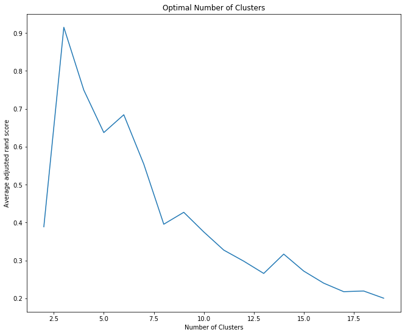

Cluster Analysis¶
[1]:
import pandas as pd
from data_describe.core.cluster import cluster
import plotly.graph_objs as go
from plotly.offline import init_notebook_mode, iplot
Load sklearn dataset¶
[2]:
from sklearn.datasets import load_wine
data = load_wine()
df = pd.DataFrame(data.data, columns=list(data.feature_names))
df['Target'] = data.target

Return Reduced Data with Cluster Labels¶
[5]:
cluster(df, return_value='reduc').head()
'[None] not found in axis'
[5]:
| component_1 | component_2 | cluster | |
|---|---|---|---|
| 0 | -3.522934 | -1.453098 | 1 |
| 1 | -2.528858 | 0.330019 | 1 |
| 2 | -2.785029 | -1.036936 | 1 |
| 3 | -3.922588 | -2.768210 | 1 |
| 4 | -1.407511 | -0.867773 | 1 |
Return Data with Cluster Labels¶
[6]:
cluster(df, return_value='data').head()
'[None] not found in axis'
[6]:
| alcohol | malic_acid | ash | alcalinity_of_ash | magnesium | total_phenols | flavanoids | nonflavanoid_phenols | proanthocyanins | color_intensity | hue | od280/od315_of_diluted_wines | proline | Target | cluster | |
|---|---|---|---|---|---|---|---|---|---|---|---|---|---|---|---|
| 0 | 14.23 | 1.71 | 2.43 | 15.6 | 127.0 | 2.80 | 3.06 | 0.28 | 2.29 | 5.64 | 1.04 | 3.92 | 1065.0 | 0 | 1 |
| 1 | 13.20 | 1.78 | 2.14 | 11.2 | 100.0 | 2.65 | 2.76 | 0.26 | 1.28 | 4.38 | 1.05 | 3.40 | 1050.0 | 0 | 1 |
| 2 | 13.16 | 2.36 | 2.67 | 18.6 | 101.0 | 2.80 | 3.24 | 0.30 | 2.81 | 5.68 | 1.03 | 3.17 | 1185.0 | 0 | 1 |
| 3 | 14.37 | 1.95 | 2.50 | 16.8 | 113.0 | 3.85 | 3.49 | 0.24 | 2.18 | 7.80 | 0.86 | 3.45 | 1480.0 | 0 | 1 |
| 4 | 13.24 | 2.59 | 2.87 | 21.0 | 118.0 | 2.80 | 2.69 | 0.39 | 1.82 | 4.32 | 1.04 | 2.93 | 735.0 | 0 | 1 |
Return Plotly object¶
[7]:
plotly_object = cluster(df, return_value='plot')
'[None] not found in axis'
[8]:
iplot(plotly_object)
KMeans - Selecting number of clusters¶
[9]:
cluster(df, kwargs={'n_clusters':2})
'[None] not found in axis'
KMeans static plot using a different metric for optimal clusters¶
[10]:
cluster(df, target='Target', interactive=False, elbow=True, analysis='adjusted_rand_score')

The `figure_or_data` positional argument must be `dict`-like, `list`-like, or an instance of plotly.graph_objs.Figure
[10]:
<seaborn.axisgrid.FacetGrid at 0x7f952d95fbe0>

HDBSCAN with t-SNE selected¶
[11]:
cluster(df, method='HDBSCAN', dim_method='tsne')
'TSNE' object has no attribute 'explained_variance_ratio_'